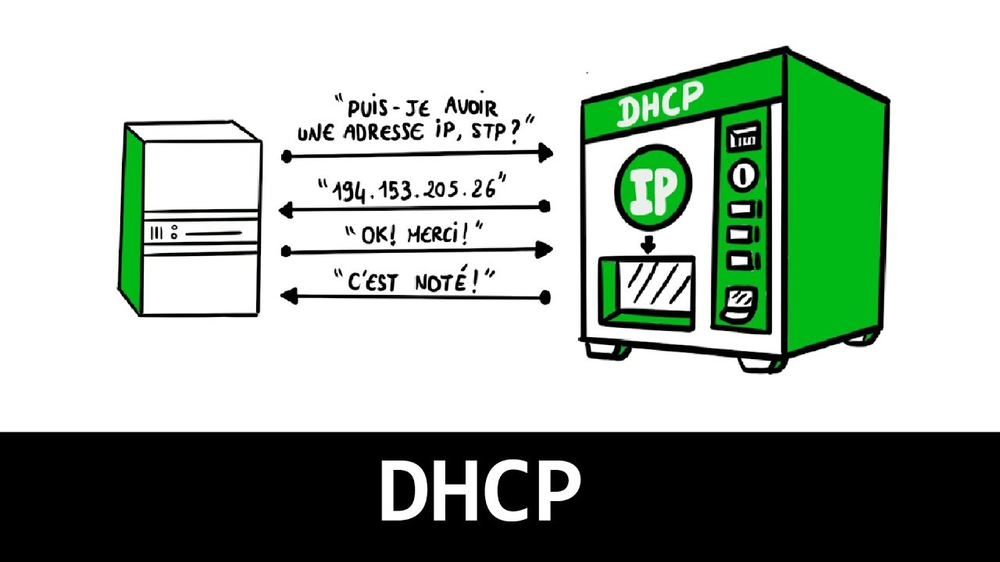

Mes projets
Découvrez quelques-uns des projets que j'ai réalisés pendant mon BTS SIO :


Configuration serveur Windows
Implémentation et maintenance d'un serveur Windows pour une infrastructure réseau.

Configuration Active Directory
Mise en place d'une gestion centralisée des utilisateurs et des ressources réseau.

Configuration GLPI
Déploiement d'une solution de gestion de parc informatique et de tickets d'incidents.

Configuration DHCP
Attribution dynamique des adresses IP sur un réseau local via un serveur DHCP.
Configuration VLAN
Segmentation logique d'un réseau pour une meilleure gestion et sécurité.
Configuration DFS
Mise en œuvre du Distributed File System pour la gestion des partages de fichiers.